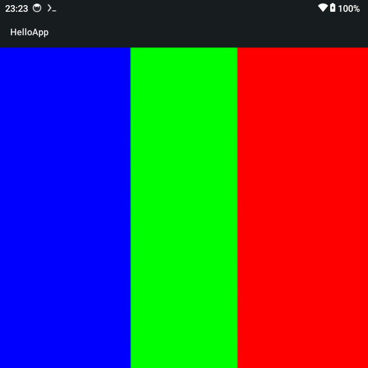

settings.gradle
pluginManagement {
repositories {
google()
mavenCentral()
gradlePluginPortal()
}
}
dependencyResolutionManagement {
repositories {
google()
mavenCentral()
}
}
rootProject.name = "hello-android"
include(":app")
build.gradle
buildscript {
repositories {
google()
mavenCentral()
}
dependencies {
classpath "com.android.tools.build:gradle:8.2.2"
}
}
執行如下命令：
$ gradle wrapper $ ./gradlew $ mkdir -p app/src/main/java/com/example/hello $ mkdir -p app/src/main/res
app/build.gradle
plugins {
id "com.android.application"
}
android {
namespace "com.example.hello"
compileSdk 34
defaultConfig {
applicationId "com.example.hello"
minSdk 21
targetSdk 34
versionCode 1
versionName "1.0"
}
}
app/src/main/AndroidManifest.xml
<manifest xmlns:android="http://schemas.android.com/apk/res/android">
<application
android:label="HelloApp">
<activity
android:name=".MainActivity"
android:exported="true">
<intent-filter>
<action android:name="android.intent.action.MAIN"/>
<category android:name="android.intent.category.LAUNCHER"/>
</intent-filter>
</activity>
</application>
</manifest>
app/src/main/java/com/example/hello/MainActivity.java
package com.example.hello;
import android.app.Activity;
import android.opengl.GLES20;
import android.opengl.GLSurfaceView;
import android.os.Bundle;
import java.nio.ByteBuffer;
import java.nio.ByteOrder;
import java.nio.FloatBuffer;
import java.nio.ShortBuffer;
import javax.microedition.khronos.egl.EGLConfig;
import javax.microedition.khronos.opengles.GL10;
public class MainActivity extends Activity {
@Override
protected void onCreate(Bundle savedInstanceState) {
super.onCreate(savedInstanceState);
GLSurfaceView glView = new GLSurfaceView(this);
glView.setEGLContextClientVersion(2);
glView.setRenderer(new Renderer());
setContentView(glView);
}
static class Renderer implements GLSurfaceView.Renderer {
private final float[] vVertices = {
-1.0f, 1.0f, 0.0f, 0.0f, 0.0f,
-1.0f, -1.0f, 0.0f, 0.0f, 1.0f,
1.0f, -1.0f, 0.0f, 1.0f, 1.0f,
1.0f, 1.0f, 0.0f, 1.0f, 0.0f
};
private final short[] indices = {0, 1, 2, 0, 2, 3};
private FloatBuffer vertexBuffer;
private ShortBuffer indexBuffer;
private int program;
private int posHandle;
private int texHandle;
private int samplerHandle;
private int textureId;
private int angleHandle;
private int aspectHandle;
private final String vertexShaderCode =
"attribute vec4 aPosition;" +
"attribute vec2 aTexCoord;" +
"varying vec2 vTexCoord;" +
"void main() {" +
" gl_Position = aPosition;" +
" vTexCoord = aTexCoord;" +
"}";
private final String fragmentShaderCode =
"precision mediump float;" +
"varying vec2 vTexCoord;" +
"uniform float angle;" +
"uniform float aspect;" +
"uniform sampler2D s_texture;" +
"const vec2 HALF = vec2(0.5);" +
"void main() {" +
" float aSin = sin(angle);" +
" float aCos = cos(angle);" +
" vec2 tc = vTexCoord;" +
" mat2 rotMat = mat2(aCos, -aSin, aSin, aCos);" +
" mat2 scaleMat = mat2(aspect, 0.0, 0.0, 1.0);" +
" mat2 scaleMatInv = mat2(1.0 / aspect, 0.0, 0.0, 1.0);" +
" tc -= HALF.xy;" +
" tc = scaleMatInv * rotMat * scaleMat * tc;" +
" tc += HALF.xy;" +
" vec3 tex = texture2D(s_texture, tc).rgb;" +
" gl_FragColor = vec4(tex, 1.0);" +
"}";
@Override
public void onSurfaceCreated(GL10 gl, EGLConfig config) {
GLES20.glClearColor(0.0f, 0.0f, 0.0f, 1.0f);
ByteBuffer vb = ByteBuffer.allocateDirect(vVertices.length * 4);
vb.order(ByteOrder.nativeOrder());
vertexBuffer = vb.asFloatBuffer();
vertexBuffer.put(vVertices);
vertexBuffer.position(0);
ByteBuffer ib = ByteBuffer.allocateDirect(indices.length * 2);
ib.order(ByteOrder.nativeOrder());
indexBuffer = ib.asShortBuffer();
indexBuffer.put(indices);
indexBuffer.position(0);
int vs = loadShader(GLES20.GL_VERTEX_SHADER, vertexShaderCode);
int fs = loadShader(GLES20.GL_FRAGMENT_SHADER, fragmentShaderCode);
program = GLES20.glCreateProgram();
GLES20.glAttachShader(program, vs);
GLES20.glAttachShader(program, fs);
GLES20.glLinkProgram(program);
GLES20.glUseProgram(program);
posHandle = GLES20.glGetAttribLocation(program, "aPosition");
texHandle = GLES20.glGetAttribLocation(program, "aTexCoord");
samplerHandle = GLES20.glGetUniformLocation(program, "s_texture");
angleHandle = GLES20.glGetUniformLocation(program, "angle");
aspectHandle = GLES20.glGetUniformLocation(program, "aspect");
float angleRad = 90.0f * (float)(Math.PI * 2.0) / 360.0f;
GLES20.glUniform1f(angleHandle, angleRad);
textureId = createTextureFromPixels();
}
@Override
public void onSurfaceChanged(GL10 gl, int width, int height) {
GLES20.glViewport(0, 0, width, height);
float aspect = (float) width / (float) height;
GLES20.glUniform1f(aspectHandle, aspect);
}
@Override
public void onDrawFrame(GL10 gl) {
int stride = 5 * 4;
GLES20.glClear(GLES20.GL_COLOR_BUFFER_BIT);
vertexBuffer.position(0);
GLES20.glEnableVertexAttribArray(posHandle);
GLES20.glVertexAttribPointer(posHandle, 3, GLES20.GL_FLOAT, false, stride, vertexBuffer);
vertexBuffer.position(3);
GLES20.glEnableVertexAttribArray(texHandle);
GLES20.glVertexAttribPointer(texHandle, 2, GLES20.GL_FLOAT, false, stride, vertexBuffer);
GLES20.glActiveTexture(GLES20.GL_TEXTURE0);
GLES20.glBindTexture(GLES20.GL_TEXTURE_2D, textureId);
GLES20.glUniform1i(samplerHandle, 0);
GLES20.glDrawElements(GLES20.GL_TRIANGLES, indices.length, GLES20.GL_UNSIGNED_SHORT, indexBuffer);
GLES20.glDisableVertexAttribArray(posHandle);
GLES20.glDisableVertexAttribArray(texHandle);
}
private int loadShader(int type, String code) {
int shader = GLES20.glCreateShader(type);
GLES20.glShaderSource(shader, code);
GLES20.glCompileShader(shader);
return shader;
}
private int createTextureFromPixels() {
int width = 320;
int height = 240;
byte[] pixels = new byte[width * height * 3];
for (int y = 0; y < height; y++) {
for (int x = 0; x < width; x++) {
int i = (y * width + x) * 3;
switch (y / 80) {
case 0:
pixels[i + 0] = (byte)0xff;
pixels[i + 1] = 0;
pixels[i + 2] = 0;
break;
case 1:
pixels[i + 0] = 0;
pixels[i + 1] = (byte)0xff;
pixels[i + 2] = 0;
break;
case 2:
pixels[i + 0] = 0;
pixels[i + 1] = 0;
pixels[i + 2] = (byte)0xff;
break;
}
}
}
ByteBuffer pixelBuffer = ByteBuffer.allocateDirect(pixels.length);
pixelBuffer.put(pixels);
pixelBuffer.position(0);
int[] tex = new int[1];
GLES20.glGenTextures(1, tex, 0);
GLES20.glBindTexture(GLES20.GL_TEXTURE_2D, tex[0]);
GLES20.glPixelStorei(GLES20.GL_UNPACK_ALIGNMENT, 1);
GLES20.glTexParameteri(GLES20.GL_TEXTURE_2D, GLES20.GL_TEXTURE_MIN_FILTER, GLES20.GL_LINEAR);
GLES20.glTexParameteri(GLES20.GL_TEXTURE_2D, GLES20.GL_TEXTURE_MAG_FILTER, GLES20.GL_LINEAR);
GLES20.glTexParameteri(GLES20.GL_TEXTURE_2D, GLES20.GL_TEXTURE_WRAP_S, GLES20.GL_CLAMP_TO_EDGE);
GLES20.glTexParameteri(GLES20.GL_TEXTURE_2D, GLES20.GL_TEXTURE_WRAP_T, GLES20.GL_CLAMP_TO_EDGE);
GLES20.glTexImage2D(
GLES20.GL_TEXTURE_2D,
0,
GLES20.GL_RGB,
width,
height,
0,
GLES20.GL_RGB,
GLES20.GL_UNSIGNED_BYTE,
pixelBuffer
);
return tex[0];
}
}
}
編譯
$ ./gradlew assembleDebug
$ file app/build/outputs/apk/debug/app-debug.apk
app/build/outputs/apk/debug/app-debug.apk: Android package (APK), with gradle app-metadata.properties, with APK Signing Block
完成
